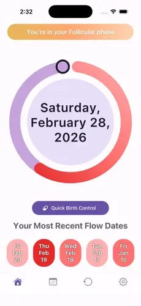
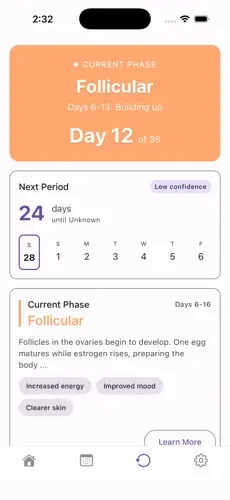
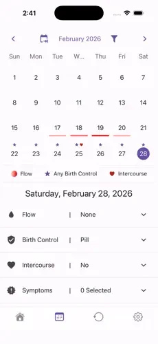

Case Study — Consumer Health App
Co‑Founder & Product / UX Lead, alongside project partner Alex Ulbrich · Sept 2025 – May 2026
Most cycle-tracking apps monetize the most sensitive data a person has — and they still force a hard break the moment a user gets pregnant. Existing tools make people abandon their cycle history and switch to an entirely different app, losing continuity right when it matters most.
"Fragmented care leaves expecting parents in the dark."
That line, from our expo positioning, was the whole thesis: build one privacy-first product that adapts across a user's life stage instead of forcing a platform switch.
Before touching UI, I synthesized peer-reviewed research on pregnancy-app usability (app-store sentiment analysis, a 31-app clinical quality review) alongside a competitive UX teardown, and kept surfacing the same four gaps: emotional isolation, confusing/scattered medical data, "pregnancy brain" memory lapses, and unclear nutrition guidance. That research became the argument for Ephira's pregnancy mode — the same local-first, no-account architecture, extended rather than replaced.
I owned product design and code quality on a three-person engineering team, working directly with our founder/stakeholder to keep every UI decision privacy-first — reviewing PRs specifically to confirm no accidental analytics or network calls slipped into the app.
The three screens below are shipped, in-app — not mockups. Each one reflects a UI decision I owned end to end.

Home — gradient tracking ring replacing the old dot indicator

Cycle tab — "Current Phase" card + next-period estimate

Calendar — unified color system for flow, birth control & symptom logging
I led the product demo and UI/UX walkthrough in our stakeholder presentation, then presented Ephira's go-to-market and positioning strategy to a panel of judges at the OSU Capstone Expo — framing the product around its core differentiator (local-first privacy with zero telemetry) against cloud-based competitors, backed by the app's MIT-licensed, publicly auditable codebase as proof.
Across three academic terms the team shipped through 156+ pull requests under a two-reviewer approval policy with CI-enforced lint and test gates — no PR merged without passing automated checks and a peer sign-off.
React NativeExpoSQLite + SQLCipher (AES-256)Drizzle ORMMIT open source
The clearest lesson from the retrospective was the simplest one: an idea that sounds great in a design review means nothing if it doesn't hold up for a real, everyday user — which is exactly why the edge-case testing mattered as much as the visual redesign.